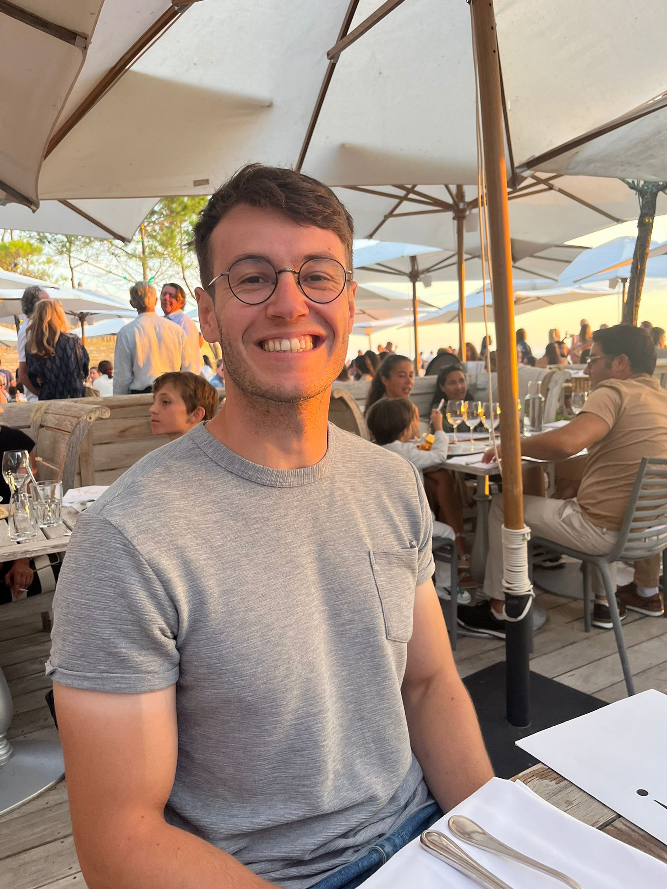

About me
I am an engineer from the École des Ponts ParisTech. On December 2nd, 2025, I defended my PhD at Inria Paris and École des Ponts ParisTech, within the CERMICS laboratory, under the supervision of Claude Le Bris and Frédéric Legoll.
You can download my CV here (english) or here (french).
You can contact me at [name].[surname]@enpc.fr.

Research Activities
My research is focused on developping new mathematical tools to better understand and/or simulate physical systems.
During my PhD at Inria Paris (within the MATHERIALS team) and École des Ponts ParisTech (within the CERMICS laboratory), Claude Le Bris, Frédéric Legoll and I developped strategies to reconstruct the effective properties associated to multiscale PDE based on (qualitatively and quantitatively) limited information. These works lie at the crossroads of Homogenization Theory and Inverse Problems. They find applications e.g. in Mechanics (see composite materials). The manuscript is available here , and the slides are available here (english) or here (french).
During my internship at EDF Lab Chatou, Martin Ferrand, Jean-Marc Hérard, Thomas Norddine and I developped new numerical schemes to simulate turbulent incompressible flows.
During my internship at CEA Grenoble, Ivan Duchemin, Luigi Genovese, Éloïse Letournel, Antoine Levitt, and I developped a new method to compute the eigenvalues of a Schrödinger operator.
Here is a list of my publications:
[3] C. Le Bris, F. Legoll, S. Ruget, Effective approximation of multiscale PDE based on coarse measurements, in preparation.
[2] M. Ferrand, J.-M. Hérard, T. Norddine, S. Ruget, Stable schemes for second-moment turbulent models for incompressible flows, Comptes Rendus. Mécanique, 2023, DOI: https://doi.org/10.5802/crmeca.202.
[1] I. Duchemin, L. Genovese, E. Letournel, A. Levitt, S. Ruget, Efficient extraction of resonant states in systems with defects, Journal of Computational Physics, 2023, DOI: https://doi.org/10.1016/j.jcp.2023.111928.
Here is a list of the conferences I attended:
[NAVIER25] Multiscale Seminar at Laboratoire Navier, École des Ponts et Chaussées, November 21st 2025, Champs-sur-Marne, France, slides.
[SMAI25] 12ème Biennale Française des Mathématiques Appliquées et Industrielles, SMAI, June 2nd 2025 - June 6th 2025, Carcans Maubuisson, France, slides.
[ROMCEP25] Reduced-Order Modeling for Complex Engineering Problems From Analysis to Practical Implementation, IMSI Insitute, January 29th 2025 - February 7th 2025, Chicago, United States, poster, slides.
[ECCOMAS24] 9th European Congress on Computational Methods in Applied Sciences and Engineering, ECCOMAS, June 3rd 2024 - June 7th 2024, Lisbon, Portugal, slides.
[CANUM24] 46ème Congrès National d'Analyse Numérique, SMAI, May 27th 2024 - May 31st 2024, Île de Ré, France, slides.
[GAMM24] Seminar on Microstructures, GAMM, Januar 25th 2024 - Januar 26th 2024, Bochum, Germany, slides.
[FJM23] Forum des Jeunes Mathématicien et Mathématiciennes, Association Femmes et Mathématiques, November 22nd 2023 - November 24th 2023, Bruxelles, Belgium, slides.
[CJCMA23] Congrès des Jeunes Chercheurs en Mathématiques et Applications, SMAI, September 25th 2023 - September 27th 2023, Gif-sur-Yvette, France, poster.
[CSE23] Conferences on Computational Science and Engineering (CSE23), SIAM, Februar 27th 2023 - March 3rd 2023, Amsterdam, Netherlands.
Here is the list of journals for which I have done review of research articles:
Springer, Archive for Rational Mechanics and Analysis.
Teaching Activities
I am also a teaching assistant at École des Ponts ParisTech. I have given the following courses:
[-] Analysis of Partial Differential Equations , 34h, 24 students (first year ENPC), webpage. This course introduces several theoretical tools (such as Banach spaces, Hilbert spaces, Lebesgue spaces, Notion of Measure Theory, Fourier Analysis, Fourier Transform, Notion of Distribution Theory, ...) to handle PDE.
[-] Partial Differential Equations: Variational and Energetical Approaches, 15h, 25 students (first year ENPC), webpage. This course focuses on the mathematical analysis of various PDEs: from Poisson equation and variants, to non-symmetric equations (such as advection-diffusion problems) and vector-valued equations (such as linear elasticity).
I have also been the supervisor of:
[-] Lucas Le Gall, Paul-Émile Marcus, Ilan Ouzen, Simon Poirson (BsC Student). The course-project lasted from January 2025 to June 2025.
[-] Ethem Colak (MsC Student). The internship lasted from June 2024 to September 2024.